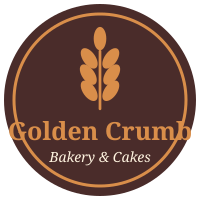
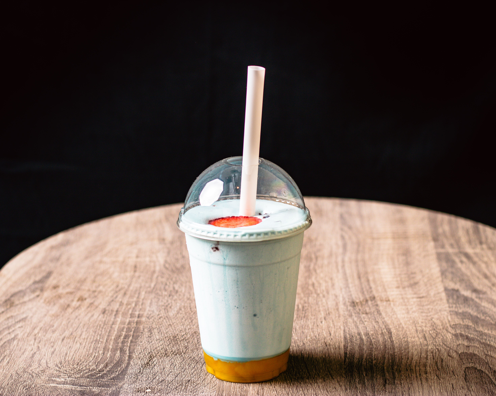

Golden Crumb

Blue Mango Layered Shake

Item Name
Blue Mango Layered Shake (vanilla shake in a soft blue colour, layered over sweet mango pulp, finished with a strawberry slice)
How It Is Made
- Blend the milk, vanilla ice cream, vanilla syrup and blue colouring until smooth and pale blue.
- Spoon the mango pulp into the bottom of each cup.
- Pour the blue shake slowly over the back of a spoon so it sits on top of the mango without mixing.
- Top with a fresh strawberry slice.
- Seal with a dome lid and add a paper straw.
Serving
Makes 2 shakes
Chef
Chef Harpreet Singh
Ingredients
- Milk - 1 cup
- Vanilla ice cream - 1.5 cups
- Vanilla syrup - 2 tbsp
- Blue colouring (butterfly pea or blue spirulina) - 0.5 tsp
- Mango pulp - 0.75 cup
- Fresh strawberry slices - 2
- Ice - 1 cup
Team Size
2 members (including the chef)
Prep Time
15 minutes
Serving Guide
- One shake per guest
- Serve with a dome lid and paper straw
- Stir before drinking to mix the layers
Customisation
- Pink colouring with strawberry in place of mango
- Passion fruit pulp instead of mango
- Extra strawberry slices on top